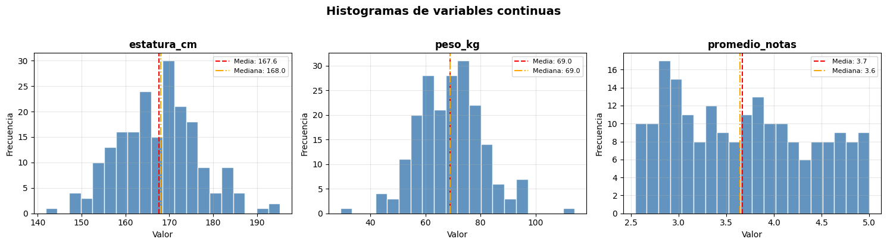
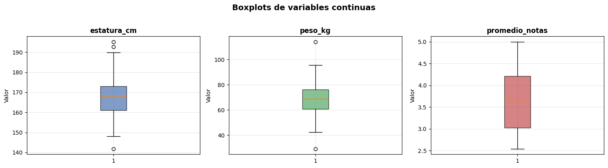
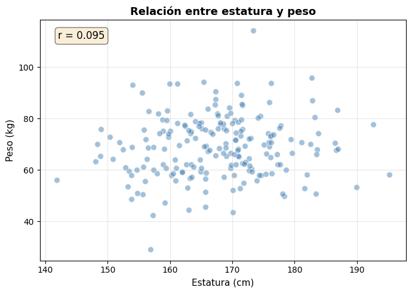
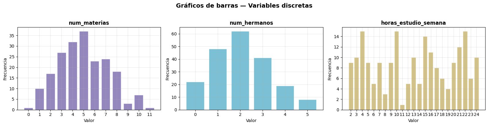
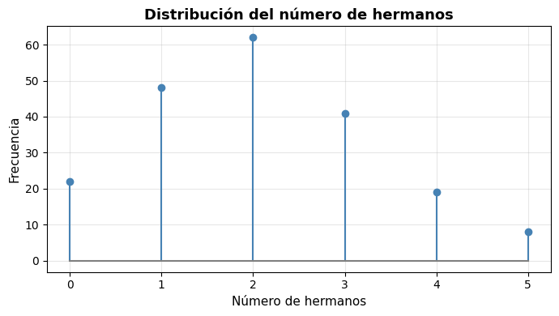
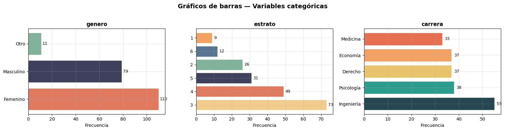
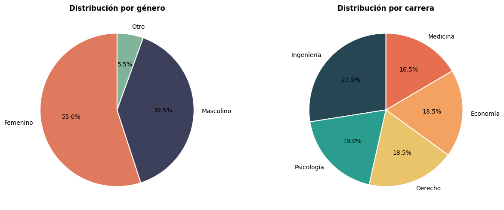
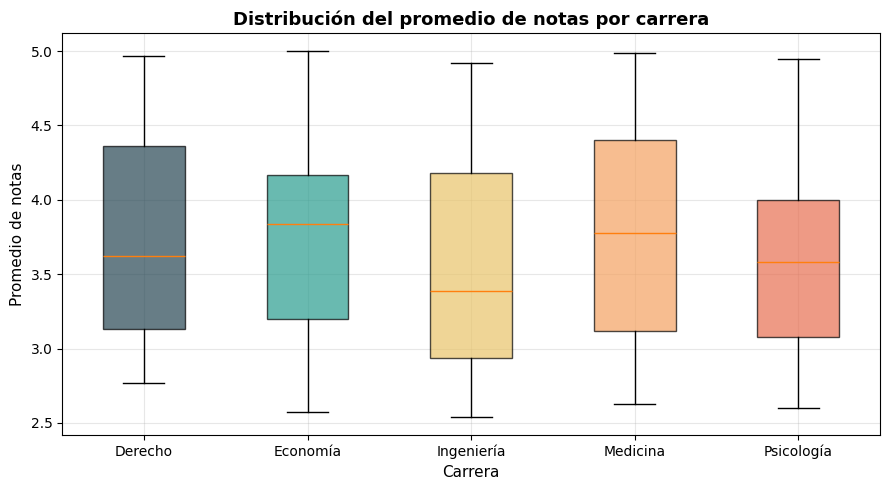
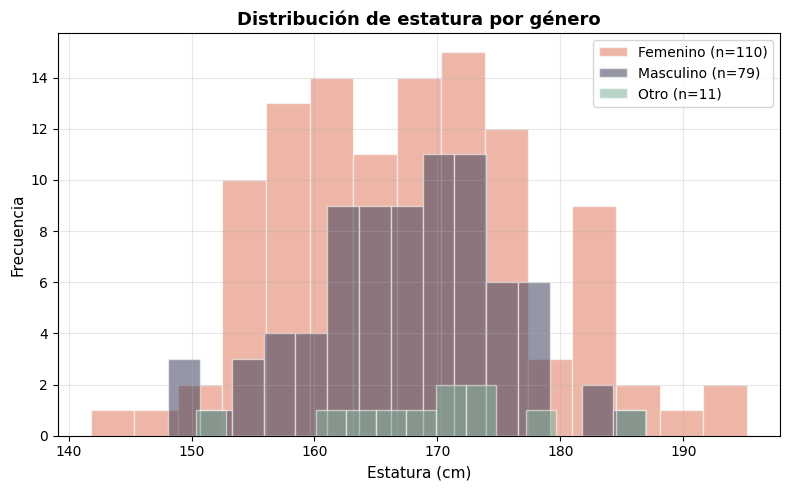

Estadísticas Descriptivas y Visualización con Pandas y Matplotlib#
En este cuaderno aprenderemos a calcular estadísticas descriptivas con pandas y a crear gráficos básicos con matplotlib. Trabajaremos con tres tipos de variables:
Tipo de variable |
Descripción |
Ejemplo |
|---|---|---|
Continua |
Puede tomar cualquier valor en un intervalo |
Estatura, peso, temperatura |
Discreta |
Toma valores enteros o contables |
Número de hijos, cantidad de materias |
Categórica |
Representa categorías o grupos |
Color favorito, estado civil, nivel educativo |
1. Importar librerías#
[1]:
import pandas as pd
import numpy as np
import matplotlib.pyplot as plt
# Configuración general de los gráficos
plt.rcParams["figure.figsize"] = (8, 4)
plt.rcParams["axes.grid"] = True
plt.rcParams["grid.alpha"] = 0.3
2. Crear un conjunto de datos de ejemplo#
Simulamos una encuesta a 200 estudiantes universitarios con variables de distintos tipos.
[2]:
np.random.seed(42)
n = 200
df = pd.DataFrame({
# Variables continuas
"estatura_cm": np.random.normal(loc=168, scale=10, size=n).round(1),
"peso_kg": np.random.normal(loc=68, scale=12, size=n).round(1),
"promedio_notas": np.random.uniform(low=2.5, high=5.0, size=n).round(2),
# Variables discretas
"num_materias": np.random.poisson(lam=5, size=n),
"num_hermanos": np.random.choice([0, 1, 2, 3, 4, 5], size=n, p=[0.10, 0.25, 0.30, 0.20, 0.10, 0.05]),
"horas_estudio_semana": np.random.randint(low=2, high=25, size=n),
# Variables categóricas
"genero": np.random.choice(["Femenino", "Masculino", "Otro"], size=n, p=[0.50, 0.45, 0.05]),
"estrato": np.random.choice([1, 2, 3, 4, 5, 6], size=n, p=[0.05, 0.15, 0.35, 0.25, 0.15, 0.05]),
"carrera": np.random.choice(
["Ingeniería", "Medicina", "Derecho", "Economía", "Psicología"],
size=n, p=[0.25, 0.15, 0.20, 0.20, 0.20]
),
})
# Convertir categóricas a tipo adecuado
df["genero"] = df["genero"].astype("category")
df["estrato"] = df["estrato"].astype("category")
df["carrera"] = df["carrera"].astype("category")
df.head(10)
[2]:
| estatura_cm | peso_kg | promedio_notas | num_materias | num_hermanos | horas_estudio_semana | genero | estrato | carrera | |
|---|---|---|---|---|---|---|---|---|---|
| 0 | 173.0 | 72.3 | 3.54 | 3 | 2 | 17 | Masculino | 3 | Medicina |
| 1 | 166.6 | 74.7 | 3.18 | 6 | 2 | 2 | Masculino | 3 | Ingeniería |
| 2 | 174.5 | 81.0 | 2.64 | 7 | 3 | 14 | Masculino | 1 | Economía |
| 3 | 183.2 | 80.6 | 4.66 | 8 | 0 | 24 | Femenino | 3 | Economía |
| 4 | 165.7 | 51.5 | 4.53 | 6 | 2 | 22 | Masculino | 3 | Medicina |
| 5 | 165.7 | 56.7 | 5.00 | 3 | 2 | 22 | Femenino | 3 | Economía |
| 6 | 183.8 | 74.2 | 4.99 | 7 | 2 | 14 | Femenino | 6 | Medicina |
| 7 | 175.7 | 74.2 | 3.89 | 5 | 0 | 3 | Femenino | 5 | Economía |
| 8 | 163.3 | 74.2 | 4.42 | 5 | 2 | 5 | Masculino | 4 | Ingeniería |
| 9 | 173.4 | 114.2 | 4.86 | 7 | 2 | 7 | Otro | 3 | Psicología |
[3]:
# Información general del DataFrame
df.info()
<class 'pandas.DataFrame'>
RangeIndex: 200 entries, 0 to 199
Data columns (total 9 columns):
# Column Non-Null Count Dtype
--- ------ -------------- -----
0 estatura_cm 200 non-null float64
1 peso_kg 200 non-null float64
2 promedio_notas 200 non-null float64
3 num_materias 200 non-null int64
4 num_hermanos 200 non-null int64
5 horas_estudio_semana 200 non-null int64
6 genero 200 non-null category
7 estrato 200 non-null category
8 carrera 200 non-null category
dtypes: category(3), float64(3), int64(3)
memory usage: 10.2 KB
3. Variables Continuas#
Las variables continuas pueden tomar cualquier valor real dentro de un rango. En nuestro dataset tenemos: estatura_cm, peso_kg y promedio_notas.
3.1 Estadísticas descriptivas#
[4]:
vars_continuas = ["estatura_cm", "peso_kg", "promedio_notas"]
# describe() calcula automáticamente las principales estadísticas
df[vars_continuas].describe().round(2)
[4]:
| estatura_cm | peso_kg | promedio_notas | |
|---|---|---|---|
| count | 200.00 | 200.00 | 200.00 |
| mean | 167.59 | 69.03 | 3.67 |
| std | 9.31 | 11.85 | 0.71 |
| min | 141.80 | 29.10 | 2.54 |
| 25% | 160.98 | 60.72 | 3.03 |
| 50% | 168.00 | 68.95 | 3.64 |
| 75% | 173.02 | 76.22 | 4.21 |
| max | 195.20 | 114.20 | 5.00 |
[5]:
# Estadísticas adicionales: mediana, varianza, asimetría y curtosis
resumen_continuas = pd.DataFrame({
"Media": df[vars_continuas].mean(),
"Mediana": df[vars_continuas].median(),
"Desv. Estándar": df[vars_continuas].std(),
"Varianza": df[vars_continuas].var(),
"Asimetría": df[vars_continuas].skew(),
"Curtosis": df[vars_continuas].kurtosis(),
"Mínimo": df[vars_continuas].min(),
"Máximo": df[vars_continuas].max(),
})
resumen_continuas.round(3)
[5]:
| Media | Mediana | Desv. Estándar | Varianza | Asimetría | Curtosis | Mínimo | Máximo | |
|---|---|---|---|---|---|---|---|---|
| estatura_cm | 167.593 | 168.00 | 9.309 | 86.656 | 0.134 | 0.029 | 141.80 | 195.2 |
| peso_kg | 69.032 | 68.95 | 11.845 | 140.307 | 0.173 | 0.819 | 29.10 | 114.2 |
| promedio_notas | 3.668 | 3.64 | 0.710 | 0.504 | 0.233 | -1.134 | 2.54 | 5.0 |
3.2 Visualización de variables continuas#
Histograma#
El histograma muestra la distribución de frecuencias de una variable continua, agrupando los valores en intervalos (bins).
[6]:
fig, axes = plt.subplots(1, 3, figsize=(15, 4))
for ax, var in zip(axes, vars_continuas):
ax.hist(df[var], bins=20, color="steelblue", edgecolor="white", alpha=0.85)
ax.axvline(df[var].mean(), color="red", linestyle="--", linewidth=1.5, label=f"Media: {df[var].mean():.1f}")
ax.axvline(df[var].median(), color="orange", linestyle="-.", linewidth=1.5, label=f"Mediana: {df[var].median():.1f}")
ax.set_title(var, fontsize=12, fontweight="bold")
ax.set_xlabel("Valor")
ax.set_ylabel("Frecuencia")
ax.legend(fontsize=8)
fig.suptitle("Histogramas de variables continuas", fontsize=14, fontweight="bold", y=1.02)
plt.tight_layout()
plt.show()

Diagrama de caja (Boxplot)#
El boxplot resume la distribución mostrando la mediana, los cuartiles (Q1, Q3) y los valores atípicos.
[7]:
fig, axes = plt.subplots(1, 3, figsize=(15, 4))
colores = ["#4C72B0", "#55A868", "#C44E52"]
for ax, var, color in zip(axes, vars_continuas, colores):
bp = ax.boxplot(df[var], patch_artist=True, vert=True)
bp["boxes"][0].set_facecolor(color)
bp["boxes"][0].set_alpha(0.7)
ax.set_title(var, fontsize=12, fontweight="bold")
ax.set_ylabel("Valor")
fig.suptitle("Boxplots de variables continuas", fontsize=14, fontweight="bold", y=1.02)
plt.tight_layout()
plt.show()

Dispersión (Scatter plot)#
El gráfico de dispersión permite explorar la relación entre dos variables continuas.
[8]:
fig, ax = plt.subplots(figsize=(7, 5))
ax.scatter(df["estatura_cm"], df["peso_kg"], alpha=0.5, color="steelblue", edgecolors="white", s=50)
ax.set_xlabel("Estatura (cm)", fontsize=11)
ax.set_ylabel("Peso (kg)", fontsize=11)
ax.set_title("Relación entre estatura y peso", fontsize=13, fontweight="bold")
# Correlación de Pearson
corr = df["estatura_cm"].corr(df["peso_kg"])
ax.annotate(f"r = {corr:.3f}", xy=(0.05, 0.92), xycoords="axes fraction",
fontsize=12, bbox=dict(boxstyle="round,pad=0.3", facecolor="wheat", alpha=0.5))
plt.tight_layout()
plt.show()

4. Variables Discretas#
Las variables discretas toman valores enteros o contables. En nuestro dataset: num_materias, num_hermanos y horas_estudio_semana.
4.1 Estadísticas descriptivas#
[9]:
vars_discretas = ["num_materias", "num_hermanos", "horas_estudio_semana"]
df[vars_discretas].describe().round(2)
[9]:
| num_materias | num_hermanos | horas_estudio_semana | |
|---|---|---|---|
| count | 200.00 | 200.00 | 200.00 |
| mean | 4.98 | 2.06 | 13.09 |
| std | 2.26 | 1.28 | 6.96 |
| min | 0.00 | 0.00 | 2.00 |
| 25% | 3.00 | 1.00 | 7.00 |
| 50% | 5.00 | 2.00 | 13.50 |
| 75% | 7.00 | 3.00 | 20.00 |
| max | 11.00 | 5.00 | 24.00 |
[10]:
# Moda y tablas de frecuencia para variables discretas
for var in vars_discretas:
moda = df[var].mode().values[0]
print(f"--- {var} ---")
print(f" Moda: {moda}")
print(f" Tabla de frecuencias:")
print(df[var].value_counts().sort_index().to_string())
print()
--- num_materias ---
Moda: 5
Tabla de frecuencias:
num_materias
0 1
1 10
2 17
3 27
4 32
5 37
6 23
7 24
8 18
9 3
10 7
11 1
--- num_hermanos ---
Moda: 2
Tabla de frecuencias:
num_hermanos
0 22
1 48
2 62
3 41
4 19
5 8
--- horas_estudio_semana ---
Moda: 4
Tabla de frecuencias:
horas_estudio_semana
2 9
3 10
4 15
5 9
6 5
7 9
8 3
9 9
10 15
11 1
12 5
13 10
14 5
15 14
16 11
17 8
18 6
19 4
20 9
21 12
22 15
23 6
24 10
4.2 Visualización de variables discretas#
Gráfico de barras de frecuencia#
Para variables discretas, el gráfico de barras es más adecuado que el histograma, ya que cada valor entero tiene su propia barra.
[11]:
fig, axes = plt.subplots(1, 3, figsize=(16, 4))
colores_disc = ["#8172B2", "#64B5CD", "#CCB974"]
for ax, var, color in zip(axes, vars_discretas, colores_disc):
conteos = df[var].value_counts().sort_index()
ax.bar(conteos.index.astype(str), conteos.values, color=color, edgecolor="white", alpha=0.85)
ax.set_title(var, fontsize=12, fontweight="bold")
ax.set_xlabel("Valor")
ax.set_ylabel("Frecuencia")
fig.suptitle("Gráficos de barras — Variables discretas", fontsize=14, fontweight="bold", y=1.02)
plt.tight_layout()
plt.show()

Diagrama de tallo (Stem plot)#
El stem plot es útil para variables discretas con pocos valores únicos, como num_hermanos.
[12]:
fig, ax = plt.subplots(figsize=(7, 4))
conteos_hermanos = df["num_hermanos"].value_counts().sort_index()
ax.stem(conteos_hermanos.index, conteos_hermanos.values, linefmt="steelblue", markerfmt="o", basefmt="gray")
ax.set_xlabel("Número de hermanos", fontsize=11)
ax.set_ylabel("Frecuencia", fontsize=11)
ax.set_title("Distribución del número de hermanos", fontsize=13, fontweight="bold")
ax.set_xticks(conteos_hermanos.index)
plt.tight_layout()
plt.show()

5. Variables Categóricas#
Las variables categóricas representan grupos o categorías sin orden numérico inherente (nominales) o con un orden natural (ordinales). En nuestro dataset: genero, estrato y carrera.
5.1 Estadísticas descriptivas#
Para variables categóricas las medidas relevantes son: frecuencias absolutas y relativas, y la moda.
[13]:
vars_categoricas = ["genero", "estrato", "carrera"]
# describe() para categóricas muestra conteo, categorías únicas, moda y frecuencia de la moda
df[vars_categoricas].describe()
[13]:
| genero | estrato | carrera | |
|---|---|---|---|
| count | 200 | 200 | 200 |
| unique | 3 | 6 | 5 |
| top | Femenino | 3 | Ingeniería |
| freq | 110 | 73 | 55 |
[14]:
# Tablas de frecuencia absoluta y relativa
for var in vars_categoricas:
freq_abs = df[var].value_counts()
freq_rel = df[var].value_counts(normalize=True).mul(100).round(1)
tabla = pd.DataFrame({"Frecuencia": freq_abs, "Porcentaje (%)": freq_rel})
print(f"\n{'='*40}")
print(f" {var.upper()}")
print(f"{'='*40}")
print(tabla.to_string())
print(f" Moda: {df[var].mode().values[0]}")
========================================
GENERO
========================================
Frecuencia Porcentaje (%)
genero
Femenino 110 55.0
Masculino 79 39.5
Otro 11 5.5
Moda: Femenino
========================================
ESTRATO
========================================
Frecuencia Porcentaje (%)
estrato
3 73 36.5
4 49 24.5
5 31 15.5
2 26 13.0
6 12 6.0
1 9 4.5
Moda: 3
========================================
CARRERA
========================================
Frecuencia Porcentaje (%)
carrera
Ingeniería 55 27.5
Psicología 38 19.0
Derecho 37 18.5
Economía 37 18.5
Medicina 33 16.5
Moda: Ingeniería
5.2 Visualización de variables categóricas#
Gráfico de barras horizontales#
[15]:
fig, axes = plt.subplots(1, 3, figsize=(16, 4))
paletas = [
["#E07A5F", "#3D405B", "#81B29A"],
["#F2CC8F", "#E07A5F", "#3D405B", "#81B29A", "#577590", "#F4A261"],
["#264653", "#2A9D8F", "#E9C46A", "#F4A261", "#E76F51"],
]
for ax, var, colores in zip(axes, vars_categoricas, paletas):
conteos = df[var].value_counts()
ax.barh(conteos.index.astype(str), conteos.values, color=colores[:len(conteos)], edgecolor="white")
ax.set_title(var, fontsize=12, fontweight="bold")
ax.set_xlabel("Frecuencia")
# Añadir etiquetas de valor en cada barra
for i, v in enumerate(conteos.values):
ax.text(v + 1, i, str(v), va="center", fontsize=9)
fig.suptitle("Gráficos de barras — Variables categóricas", fontsize=14, fontweight="bold", y=1.02)
plt.tight_layout()
plt.show()

Gráfico circular (Pie chart)#
El gráfico circular muestra la proporción de cada categoría respecto al total.
[16]:
fig, axes = plt.subplots(1, 2, figsize=(13, 5))
# Pie chart — Género
conteos_genero = df["genero"].value_counts()
axes[0].pie(
conteos_genero.values,
labels=conteos_genero.index,
autopct="%1.1f%%",
startangle=90,
colors=["#E07A5F", "#3D405B", "#81B29A"],
wedgeprops={"edgecolor": "white", "linewidth": 1.5},
)
axes[0].set_title("Distribución por género", fontsize=12, fontweight="bold")
# Pie chart — Carrera
conteos_carrera = df["carrera"].value_counts()
axes[1].pie(
conteos_carrera.values,
labels=conteos_carrera.index,
autopct="%1.1f%%",
startangle=90,
colors=["#264653", "#2A9D8F", "#E9C46A", "#F4A261", "#E76F51"],
wedgeprops={"edgecolor": "white", "linewidth": 1.5},
)
axes[1].set_title("Distribución por carrera", fontsize=12, fontweight="bold")
plt.tight_layout()
plt.show()

6. Análisis cruzado: combinando tipos de variables#
Una práctica común es cruzar una variable categórica con una continua o discreta para comparar distribuciones entre grupos.
[17]:
# Estadísticas de promedio de notas por carrera
df.groupby("carrera")["promedio_notas"].agg(["mean", "median", "std", "min", "max"]).round(2)
[17]:
| mean | median | std | min | max | |
|---|---|---|---|---|---|
| carrera | |||||
| Derecho | 3.73 | 3.62 | 0.69 | 2.77 | 4.97 |
| Economía | 3.75 | 3.84 | 0.70 | 2.57 | 5.00 |
| Ingeniería | 3.57 | 3.39 | 0.74 | 2.54 | 4.92 |
| Medicina | 3.72 | 3.78 | 0.74 | 2.63 | 4.99 |
| Psicología | 3.62 | 3.58 | 0.69 | 2.60 | 4.95 |
[18]:
# Boxplot de promedio de notas por carrera
fig, ax = plt.subplots(figsize=(9, 5))
carreras = df["carrera"].cat.categories.tolist()
datos_por_carrera = [df[df["carrera"] == c]["promedio_notas"].values for c in carreras]
colores_carrera = ["#264653", "#2A9D8F", "#E9C46A", "#F4A261", "#E76F51"]
bp = ax.boxplot(datos_por_carrera, labels=carreras, patch_artist=True, vert=True)
for patch, color in zip(bp["boxes"], colores_carrera):
patch.set_facecolor(color)
patch.set_alpha(0.7)
ax.set_ylabel("Promedio de notas", fontsize=11)
ax.set_xlabel("Carrera", fontsize=11)
ax.set_title("Distribución del promedio de notas por carrera", fontsize=13, fontweight="bold")
plt.tight_layout()
plt.show()
/var/folders/tf/x2jqms8n4wn8gfljd87ypbl40000gn/T/ipykernel_21352/2990617768.py:8: MatplotlibDeprecationWarning: The 'labels' parameter of boxplot() has been renamed 'tick_labels' since Matplotlib 3.9; support for the old name will be dropped in 3.11.
bp = ax.boxplot(datos_por_carrera, labels=carreras, patch_artist=True, vert=True)

[19]:
# Histogramas superpuestos: estatura por género
fig, ax = plt.subplots(figsize=(8, 5))
generos = df["genero"].cat.categories.tolist()
colores_gen = ["#E07A5F", "#3D405B", "#81B29A"]
for genero, color in zip(generos, colores_gen):
datos = df[df["genero"] == genero]["estatura_cm"]
ax.hist(datos, bins=15, alpha=0.55, label=f"{genero} (n={len(datos)})", color=color, edgecolor="white")
ax.set_xlabel("Estatura (cm)", fontsize=11)
ax.set_ylabel("Frecuencia", fontsize=11)
ax.set_title("Distribución de estatura por género", fontsize=13, fontweight="bold")
ax.legend()
plt.tight_layout()
plt.show()

7. Resumen de funciones utilizadas#
Función / Método |
Descripción |
|---|---|
|
Resumen estadístico (media, std, cuartiles, min, max) |
|
Media y mediana |
|
Desviación estándar y varianza |
|
Asimetría y curtosis |
|
Valor más frecuente (moda) |
|
Tabla de frecuencias absolutas |
|
Tabla de frecuencias relativas |
|
Estadísticas agrupadas por categoría |
|
Matriz de correlación |
|
Histograma |
|
Diagrama de caja |
|
Gráfico de dispersión |
|
Gráfico de barras vertical / horizontal |
|
Gráfico circular |
|
Diagrama de tallo |
Recomendaciones según tipo de variable#
Tipo de variable |
Estadísticas recomendadas |
Gráficos recomendados |
|---|---|---|
Continua |
Media, mediana, desv. estándar, asimetría, curtosis |
Histograma, boxplot, scatter |
Discreta |
Media, mediana, moda, tabla de frecuencias |
Barras, stem plot, boxplot |
Categórica |
Moda, frecuencias absolutas y relativas |
Barras, pie chart |